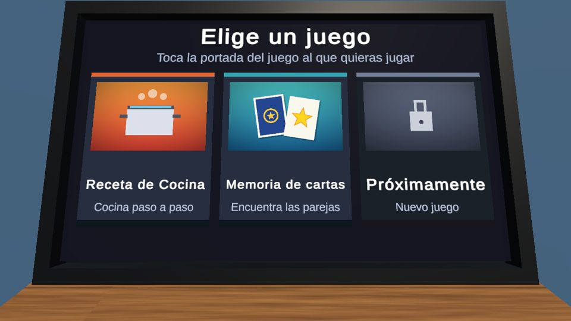

Realidad virtual · Rehabilitación
RehabilitaciónVR Rehabilitar jugando, solo con las manos.
Juegos de rehabilitación en realidad virtual para las gafas Pico 4 Ultra. El paciente juega sentado y sin mandos: las gafas siguen sus manos y cada partida deja un informe para el terapeuta.

Cómo se juega
Los juegos
Cada juego trabaja funciones distintas y tiene varios niveles. Todos se eligen desde el mismo Lobby.